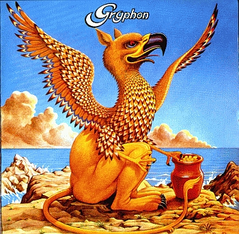
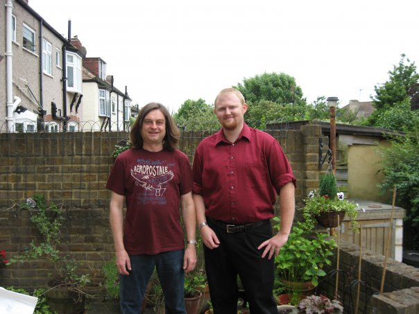
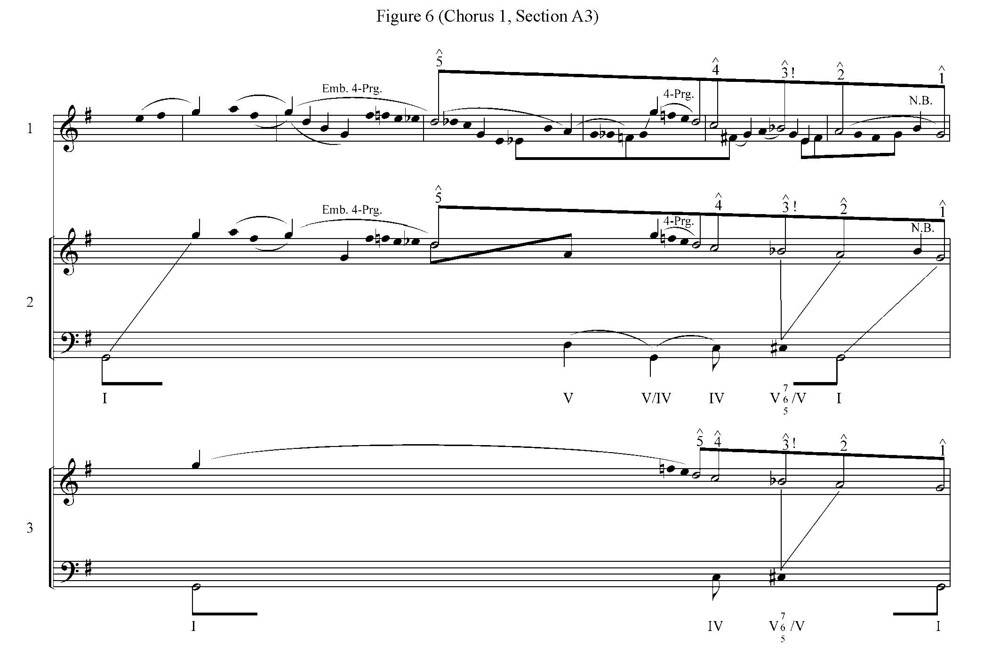
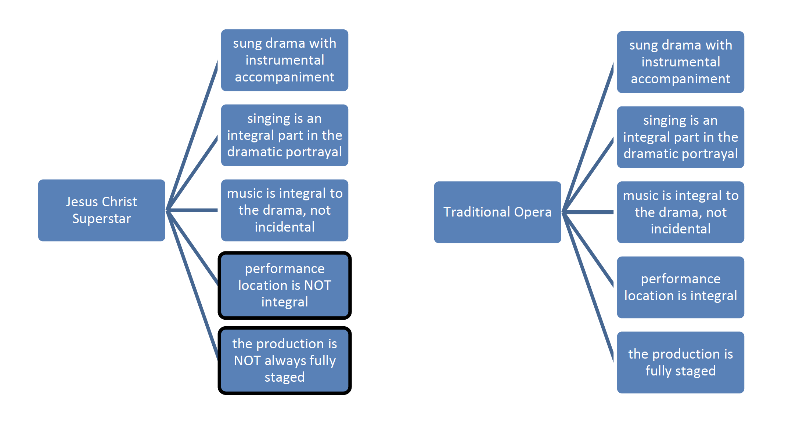

ogueMiddleChild
ogueMiddleChild
Gryphon: Origins, Influences, and Stylistic Development
Master's Thesis by Russell Kahmann
Abstract:
Progressive rock during the late 1960's and throughout the 1970's contained an eclectic mix of musical genres whose
inspirations range from Western classical music to Indian ragas. This thesis focuses on the predominantly
folk-inspired band Gryphon and its stylistic development from 1973-1975. One song from each of Gryphon's first
four albums is analyzed to show the band's progression from its folk roots to an ensemble that combined rock,
classical, folk, and jazz styles. The compositions analyzed are "Juniper Suite" from Gryphon, "Midnight Mushrumps"
from Midnight Mushrumps, "Checkmate" from Red Queen to Gryphon Three, and "(Ein Klein) Heldenleben" from Raindance.
You can download or view my entire thesis by clicking here.
In 2007 I traveled to London to meet with the guitarist Graeme Taylor. He was very gracious in allowing me to look through and photograph some of his memorabilia from the 70's.
Reunion Concert
In 2008, the band requested some of my transcriptions for an upcoming reunion tour. I sent them everything I had, including a full transcription of "Juniper Suite," the song that inspired my thesis. You can watch the video of "Juniper Suite" from that concert below and even check out my transcription!
Modal Ambiguity and the Hybrid Mode in the Music of Gryphon
Presented at the 2008 Music Theory Midwest Conference
Condensed Abstract:
The focus of this presentation is an analysis of the modal ambiguity present in certain folk-inspired sections of Gryphon's
music taken from the band's first four albums (1973-1975) as transcribed by the author. Much of this modal ambiguity can be
explained by what Edward Macan refers to as a hybrid mode. This hybrid mode is essentially a major mode that contains a lowered
seventh and alternately raised and lowered third and sixth degrees. While several of these alterations are also used in the blues
scale (which progressive rock bands frequently drew upon) the hybrid mode more fully describes the alterations taking place. The
use of the hybrid mode is also found to be a result of an amalgam of the most commonly used British folksong modalities.
You can view the presentation with printed handout here.
Merry-Go-Round: Motivic and Schenkerian Analysis of a Charlie Parker Solo
In 2009, I attempted to apply Schenkerian analysis to jazz, something most music theorists find to be wrong. Too bad!
I love Charlie Parker, and his first solo on "Merry Go Round" is one of my favorites. I was hearing things that I believed could be explained better by Shenkerian analysis.
The paper was submitted for possible publication, and was deemed by one reviewer as "pedantic and full of platitudes." You can decide for yourself here.
Rock Opera: Defining a Genre
Anyone who knows me knows - I don't like opera (except for Wozzeck). This was my attempt to determine if some of the popular rock operas can actually be defined as "opera," especially to classically trained musicians. I didn't fully convince Dr. Hallman, but she didn't scold me for the investigation, so I consider that a WIN!
The analysis employs conceptual modeling to investigate how well each rock opera adheres to the classical operatic form. Check out the masterpiece here.